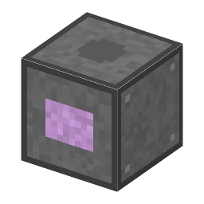
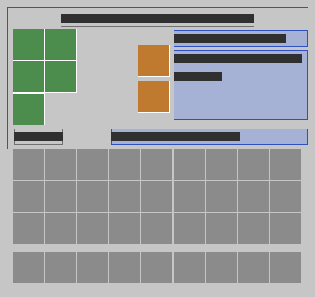

工程（9）
→ 化学増幅レジストの合成釜化学増幅レジスト：fries・1,500 W・15 秒 →
[2-33] 1982 IBM の化学増幅レジストの材料
→ 化学増幅レジストの合成釜化学増幅レジスト：reduce・1,500 W・15 秒 →
[2-33] 1982 IBM の化学増幅レジストの材料
→ 化学増幅レジストの合成釜化学増幅レジスト：dehydrate・1,500 W・15 秒 →
[2-33] 1982 IBM の化学増幅レジストの材料
→ 化学増幅レジストの合成釜化学増幅レジスト：polymer・1,500 W・15 秒 →
[2-33] 1982 IBM の化学増幅レジストの材料
→ 化学増幅レジストの合成釜化学増幅レジスト：hydrolyze・1,500 W・15 秒 →
[2-33] 1982 IBM の化学増幅レジストの材料
→ 化学増幅レジストの合成釜化学増幅レジスト：protect・1,500 W・15 秒 →
[2-33] 1982 IBM の化学増幅レジストの材料
→ 化学増幅レジストの合成釜化学増幅レジスト：sulfoxide・1,500 W・15 秒 →
[2-33] 1982 IBM の化学増幅レジストの材料
→ 化学増幅レジストの合成釜化学増幅レジスト：antimonate・1,500 W・15 秒 →
[2-33] 1982 IBM の化学増幅レジストの材料
→ 化学増幅レジストの合成釜化学増幅レジスト：pag・1,500 W・15 秒 →
[2-33] 1982 IBM の化学増幅レジストの材料
